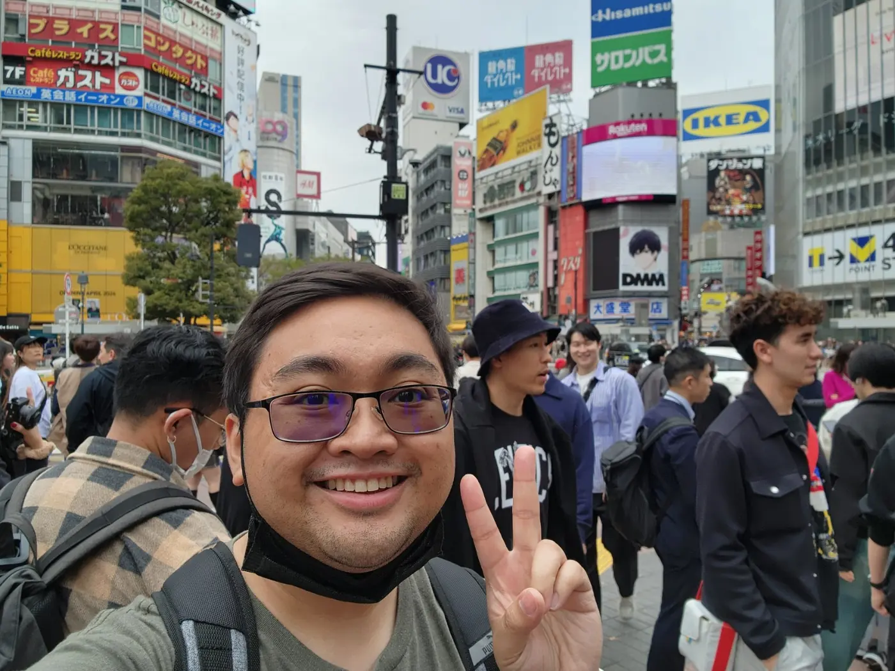
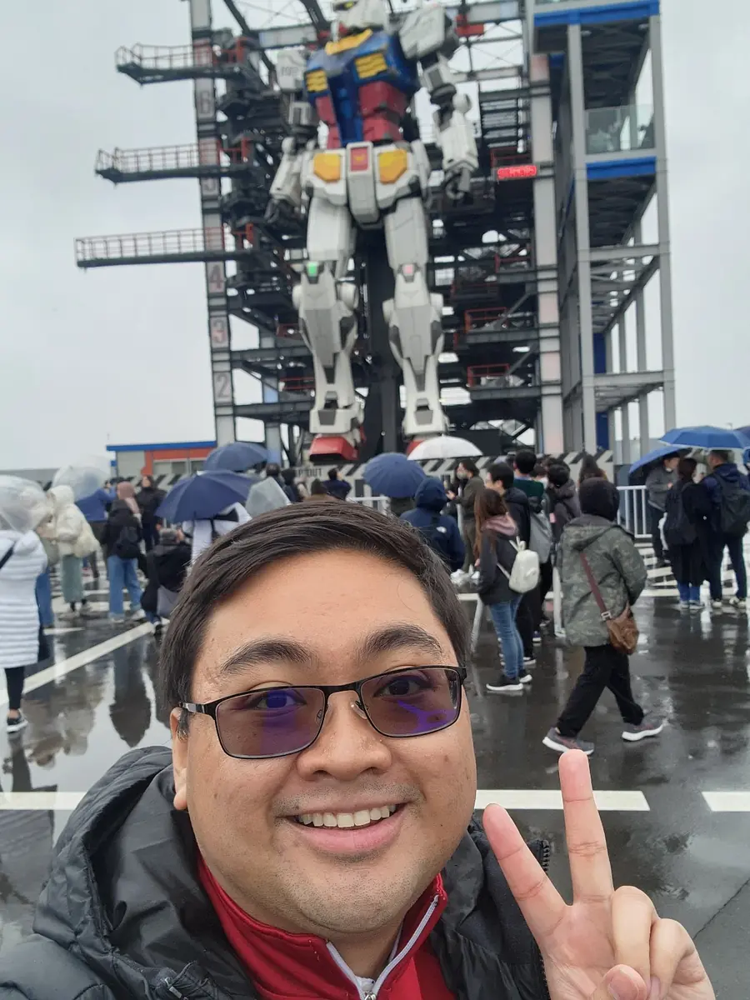
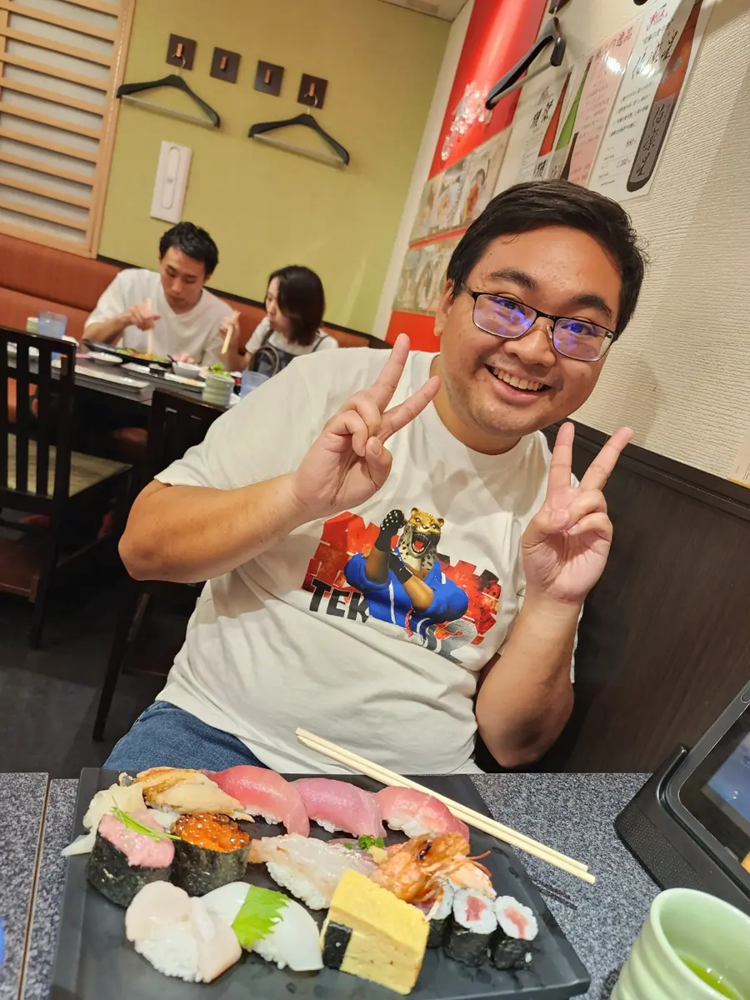

One weekend
Go somewhere.
Try a new restaurant, wander a museum, or turn a day trip into a full afternoon.
Northern California · looking for something real
I’m John—Filipino American, early thirties, based in the East Bay. I work in healthcare, make things for fun, travel when I can, and would like to meet someone kind, curious, and ready to build something lasting.

Try a new restaurant, wander a museum, or turn a day trip into a full afternoon.
Cook dinner, choose a game or movie, and talk longer than either of us planned.
The short version
I talk with my hands, remember small details, and get genuinely excited when I care about something. I like having a plan, but I’m not precious about it. If dinner is great and the itinerary falls apart, that still sounds like a good night.
My life already has work I care about, family, friends, hobbies, and plans. I’m not looking for someone to fill empty space. I’m looking for someone with a full life of her own who also wants to build something shared.
Philippines United States Australia
Where I come from
I grew up in California with Filipino roots and family ties in the Philippines and Australia. Home has never felt limited to one place.
What I do
I’m a CNA and nursing student. When I’m off the clock, I still end up making browser games, study tools, or whatever idea refuses to leave me alone.
How I recharge
A flight itinerary is fun. So is a drive up the coast, karaoke, a strategy game, or a quiet evening that turns into a long conversation.
A few actual moments
Trips, good food, and the sort of side quests I will always make time for.



Life together
The big plans are fun. The ordinary days are what make a life.
Japan, Australia, a weekend up the coast, or a neighborhood neither of us has explored yet.
Cooking, groceries, shared routines, inside jokes, and a place that feels good to come back to.
Your friends, interests, and goals still matter. I want to be curious about your life, not take it over.
I want marriage and kids eventually, with a relationship that already feels loving and steady before we take those steps.
Where I’m at
I’m looking for a long-term relationship that can grow toward marriage and kids. I’m not trying to force a timeline with the wrong person.
What I value
Matching every hobby matters less to me than how we communicate, how we treat people, and whether we genuinely enjoy being around each other.
You treat people well, including when there is nothing to gain from it.
You communicate directly, listen in return, and do not turn every disagreement into a guessing game.
You care about something—a career, craft, community, or project—and want a partner who cheers for it.
I want a relationship where we laugh often, act a little ridiculous together, and actually enjoy each other.
What you can expect from me
A good first date
A first date is not a job interview. Having something to do makes it easier to relax and see whether we click.
Flexible, low pressure, and easy to extend when the conversation is good.
Built-in conversation starters—and it’s fine if we disagree about the art.
Food, movement, people-watching, and several small things we did not plan to buy.
We make something questionable, laugh about it, and leave with an actual story.
Off the clock
Games, travel, Japanese, anime, movies, karaoke, and building PCs are all fair game.
Easy ways to start a conversation:
Say hello
Tell me how you found the page and what made you want to reach out. A couple of honest sentences is plenty.